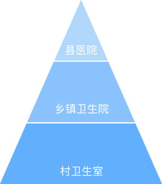

基层医疗机构的患者将井喷式爆发性增长
《国务院办公厅关于全面推开县级公立医院综合改革的实施意见》 2015 35号文，明确县医院诊疗服务功能定位，并确定目标要求“到2017年基本实现大病不出县”。
● 明确县医院是县域内的医疗卫生服务中心、农村三级医疗卫生服务网络的龙头和城乡医疗卫生服务体系的纽带。
● 试点地区30万以上人口的县至少拥有一所二级甲等综合医院和一所二级甲等中医医院，县城内就诊率提高到90%左右，基本实现大病不出县。
● 远程医疗服务覆盖试点地区50%以上的县（区、县级市）。
